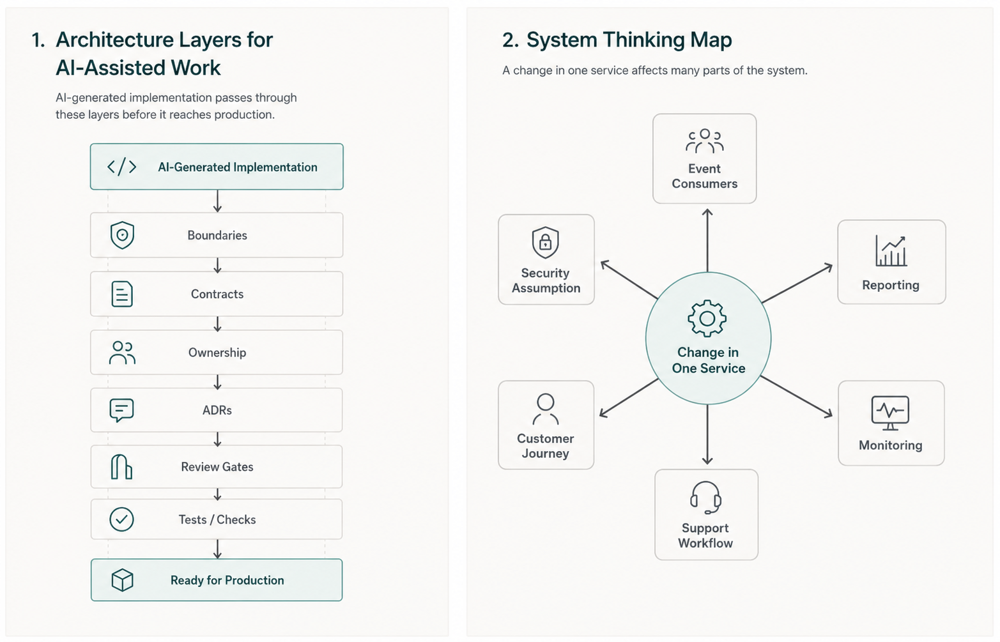
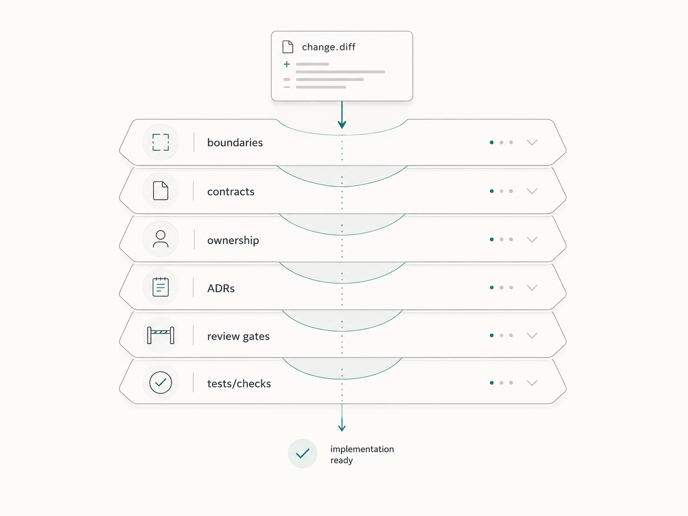

AI makes it easier to produce code.
That does not make architecture less important.
It makes architecture more important.
A team asks an AI assistant to add a customer notification feature. The assistant reads the code, finds a similar pattern, creates a service, adds tests, and opens a pull request.
The code compiles. The tests pass. The PR summary looks useful.
Then review exposes the real problem.
The change bypasses the event-driven integration pattern. It stores data owned by another service. It adds a second notification path instead of using the shared contract. It passes local tests while quietly increasing system complexity.
The issue is not bad syntax.
The issue is weak architectural guidance.
This is the architectural problem of AI-assisted software engineering.
When implementation becomes faster, teams can create more code, more integrations, and more changes. Without clear architecture, that speed can increase complexity and drift.
AI can accelerate coding.
Architecture keeps acceleration from becoming chaos.
Faster code changes the risk
For years, implementation effort acted as a natural speed limit.
Changing a system required time. A developer had to understand the requirement, explore the codebase, make changes, write tests, and prepare the pull request. That effort did not guarantee good architecture, but it slowed the rate at which architectural mistakes could spread.
AI changes that rhythm.
A coding assistant can generate an implementation quickly. A coding agent can modify files, run tests, and prepare a pull request. Another assistant can generate documentation and test cases. A review assistant can summarize the diff.
That speed is useful.
It also means architectural drift can happen faster.
A poorly placed helper can be copied across services. A wrong integration pattern can appear in multiple generated changes. A missing contract can become several inconsistent APIs. A vague ownership boundary can produce duplicated business rules.
DORA's 2025 AI-assisted software development research is useful here because it treats AI adoption as a software delivery system issue, not only a tooling issue. AI can amplify the strengths or weaknesses of the system around it.
If the architecture is clear, AI has something useful to follow.
If the architecture is vague, AI may simply generate plausible code inside that vagueness.
Architecture is not big design up front
When engineers hear "architecture matters," some hear "slow down and create diagrams."
That is not the point.
Architecture in the AI era does not have to mean heavy committees, months of design, or documents nobody reads.
Useful architecture is much more practical.
It answers questions that affect repeated implementation:
- Where does this change belong?
- Which boundary should not be crossed?
- Which service owns this data?
- Which API or event contract must remain stable?
- Which dependency direction is allowed?
- Which trade-off did we already accept?
- Who owns review for this area?
- What operational behavior must be preserved?
These are not abstract questions.
They are the questions that decide whether generated code fits the system.

Boundaries guide generated work
AI assistants are good at continuing patterns.
That is helpful when the pattern is clear.
It is dangerous when the pattern is accidental.
If a repository has clear module boundaries, service responsibilities, data ownership, and dependency rules, AI has better signals. It can see where code belongs and what it should avoid.
If the boundaries are unclear, AI may follow whatever path appears easiest from the surrounding code.
This is how architecture drift often starts.
One generated change imports from the wrong layer because it compiles. Another repeats the same pattern. A third adds a shortcut because the shortcut now looks normal. Eventually, the architecture diagram still says one thing, but the code says another.
The fix is not to ban AI from implementation.
The fix is to make boundaries visible.
That might mean:
- a short architecture guide
- a repository map
- examples of correct module usage
- dependency rules
- architecture tests
- code owner rules for sensitive areas
- PR checklist items for boundary-crossing changes
Architecture should not live only in senior engineers' heads.
If AI cannot see the boundary, it cannot respect the boundary.
Contracts become more important
AI-generated code can be locally correct and systemically wrong.
It can pass unit tests while breaking an API expectation. It can generate an event payload that looks reasonable but does not match downstream consumers. It can update a database field without understanding reporting dependencies. It can create a new integration path instead of using the accepted contract.
Contracts are how systems stay coherent as teams move quickly.
In AI-assisted delivery, useful contracts include:
- API schemas
- event formats
- data ownership rules
- backward compatibility expectations
- error handling conventions
- service-level expectations
- integration test expectations
When contracts are explicit, AI can work within them and reviewers can check against them.
When contracts are implicit, generated code may make assumptions that are hard to see until production.
This is why contract tests, schema checks, generated-code drift checks, and API review gates become more valuable. They turn part of architecture into executable feedback.
Architecture is not only a diagram.
Sometimes architecture is a failing test that says:
This service is not allowed to depend on that layer.
This event shape is not allowed to change silently.
This API contract must remain backward compatible.

Ownership keeps architecture alive
Architecture decays when nobody owns it.
A service has a boundary, but nobody knows who approves changes. A shared library becomes a dumping ground. An event contract evolves without a clear owner. A platform rule exists, but reviewers apply it inconsistently.
AI does not solve unclear ownership.
It can make unclear ownership more visible.
If an assistant generates a change across three services, who reviews the system impact? If a coding agent edits a shared library, who owns the downstream blast radius? If generated code touches authentication, who accepts the risk?
The answer cannot be "the AI."
Ownership is part of architecture.
GitHub's CODEOWNERS and protected branch features are tool-specific examples, but the principle is broader: important parts of the system should have visible owners and review paths.
Ownership helps architecture survive repeated change.
It tells humans and AI-assisted workflows where approval belongs.
Trade-offs still need humans
AI can help with architecture.
It can summarize options. It can draft diagrams. It can compare patterns. It can list risks. It can prepare an ADR. It can identify likely impacted services.
That is useful.
But architecture is not only option generation.
Architecture is trade-off acceptance.
Should this service own the data or consume an event? Should the team accept eventual consistency? Should the API remain backward compatible at higher implementation cost? Should the platform add a shared capability or allow teams to duplicate local behavior for now?
These decisions depend on roadmap pressure, team skill, operational maturity, compliance, cost, existing dependencies, and long-term ownership.
AI can inform the decision.
Humans own the decision.
Thoughtworks has long promoted Lightweight Architecture Decision Records as a way to capture context, decisions, and consequences. ADRs become even more useful when AI participates in implementation because they give future humans and assistants a clear record of why the system works the way it does.
The goal is not to document every small choice.
The goal is to preserve decisions that future changes must respect.
System thinking becomes more valuable
AI can help implement a service.
It does not automatically understand the whole system.
A change that looks small locally may affect downstream reporting, audit logs, retry behavior, cache invalidation, monitoring, data retention, or customer support workflows.
This is where system thinking becomes more valuable.
Good architects and senior engineers see relationships:
- service dependencies
- ownership boundaries
- failure modes
- operational behavior
- data flows
- customer journeys
- security assumptions
- long-term maintenance cost
AI can help surface some of these relationships when given the right context.
But the team still needs people who can ask system-level questions before the code spreads.
What happens if this event is delivered twice?
Who consumes this field?
What breaks if this service is unavailable?
Will this pattern still work when three more teams copy it?
Where will support engineers look during an incident?
Those are architecture questions.
They matter more when implementation is fast.
Make architecture visible where work happens
Architecture that lives only in a slide deck will not guide daily AI-assisted work.
Architecture has to be close enough to implementation that humans and tools can use it.
That does not mean creating a giant architecture portal.
Start with practical artifacts:
- a short system overview
- a repository map
- ADRs for important decisions
- API and event contracts
- examples of correct patterns
- agent instructions that mention boundaries
- architecture checks where rules are repeatable
- review gates for high-risk areas
DORA's work on AI-accessible internal data points to the same practical need: AI tools work better when internal context is accessible, reliable, and relevant.
The documentation chapter in Software Engineering at Google makes another practical point: documentation works better when it has ownership, review, and a canonical place in the workflow.
That applies directly here.
Architecture guidance must be owned and maintained. Otherwise it becomes knowledge debt. Stale diagrams can be worse than no diagrams because they give both humans and AI the wrong map.
Review has to include architecture
Code review in AI-assisted work cannot stop at style and local correctness.
Reviewers need to ask:
- Does this change fit the approved architecture?
- Did it cross a boundary?
- Did it create a new dependency direction?
- Did it duplicate business logic?
- Did it change a contract?
- Did it introduce operational risk?
- Does it need an ADR?
- Does the right owner approve it?
Google's public code review guidance is useful here because it treats review as more than formatting. It includes design, functionality, complexity, tests, naming, comments, style, and documentation.
In AI-assisted work, design review becomes even more important because generated code can look clean while quietly moving the system in the wrong direction.
Three practical takeaways
First, treat architecture as an accelerator, not a blocker. Clear boundaries help AI-generated work land in the right place faster.
Second, make architecture visible. Put the important boundaries, contracts, ownership, decisions, and examples where contributors and AI tools can find them.
Third, scale architecture review with risk. Not every small change needs an architecture discussion. Cross-boundary changes, public contracts, data ownership, security-sensitive areas, and production-impacting changes deserve stronger review.
AI does not remove architecture.
It raises the cost of ignoring it.
When teams can generate code faster, they need stronger clarity about where that code belongs, which contracts it must respect, who owns the affected area, and what trade-offs the system has already accepted.
AI can accelerate coding.
Architecture keeps acceleration from becoming chaos.